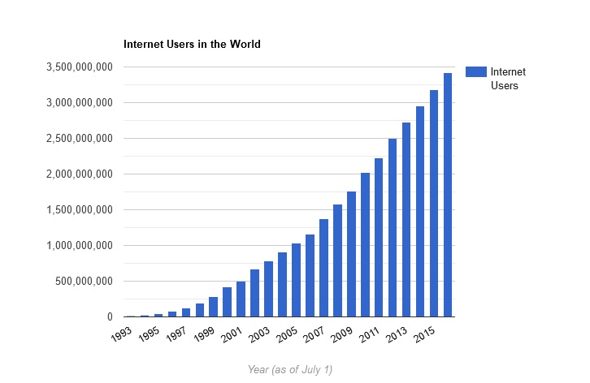

With use of smartphones and computers daily, the Internet has become an integral part of our lives. There are many things we can do on the Internet and use it for many different purposes. Around 40% of the world population has an internet connection today (view all on a page ). In 1995, it was less than 1%.
The number of internet users has increased tenfold from 1999 to 2013.
The first billion was reached in 2005. The second billion in 2010. The third billion in 2014.
The chart and table below show the number of global internet users per year since 1993:
The World Wide Web, or the Internet, is a series of connected networks that connect computers across the world together. This network allows different kinds of communication methods. Voice over IP, or VoIP, refers to programs like Skype that allow people to communicate using audio and video over the Internet. Social media sites like Facebook are another example of Internet communication. These sites allow people to post messages and then respond to the messages over others in a long network from one computer to another. Internet forums also facilitate communication by letting someone create a thread, which others then respond to in a long chain. Many websites such as blogs also allow people to post comments to communicate that way. Chat rooms are among some of the oldest examples of communication on the Internet along with forums. Even before graphic user interfaces, such as AOL, it was possible to communicate over the Internet in text form only when the Internet was mostly a collection of connected college and government computers. [2]
Ease of communicationThe Internet facilitates communication to researchers; as it serves as a guide and original source of information. It is very easy to access and at the same time saves time, allowing a person to better and effectively manage their resources. In addition, the Internet is very convenient because an individual can easily perform research work at home with great comfort and convenience. The Internet is a valuable search tool and has been informative for academic research, as it significantly helps improve research skills, and makes learning visual and easy to follow. Comparatively cheap and fast dispersal of information The Internet creates a comparatively economical avenue for the dissemination of information and articles. Thus, various organizations and individuals can circulate information among millions of users. For example, in due course, researchers can evaluate and make use of this information and articles circulating for their work, thus giving them a broader idea and knowledge in their work. In addition, there is a spontaneous dispersion of information to several Internet users when such information is added to a website. In this sense, millions of users, including researchers, browse this information and use it for their work. Hence, the web is considered as a means of disseminating information par excellence, since it eliminates the loss of time between the publication of the contents and their availability to users. |
Wealth of informationIn addition, the Internet is a wealth of information and very advantageous for several reasons; students go on the Internet to gather a lot of academic information very useful for research; and the information contained on the Internet may be useful for academic research. It is a potential research tool and opens up a new and broad source of information. According to Bachman et al (2006), information is probably the greatest advantage that the Internet offers users. The Internet is an apparent treasure trove of information. Any kind of information on any subject under the sun is available on the Internet. [3] |
E-commerceElectronic commerce or e-commerce is simply the buying and selling of goods and services using the internet, when shopping online. However, the term is often used to describe all of a seller’s efforts, when selling products directly to consumers. It starts when a potential customer learns about a product and continues through purchase, use, and, ideally, ongoing customer loyalty. Data powers the most successful e-commerce operations, which take advantage of best practices such as targeted email marketing, audience segmentation, and marketing automation. For example, following up with a customer when selling online after they have placed an item in an online shopping cart but didn’t complete the transaction can significantly increase your likelihood of making the sale. In the 1990s, retailers discovered a new way to conduct business—the internet. E-commerce is a $2.3 trillion industry that's growing each year, so anyone who wants to open an online store and benefit from the rise of e-commerce needs to understand its fundamentals. |
[1] https://www.internetlivestats.com/internet-users/
[2] https://www.reference.com/world-view/internet-communication-a0b802f85dc624db
[3] https://mailchimp.com/marketing-glossary/e-commerce/
[4] https://online-tesis.com/en/advantages-and-disadvantages-of-using-the-internet-in-research/